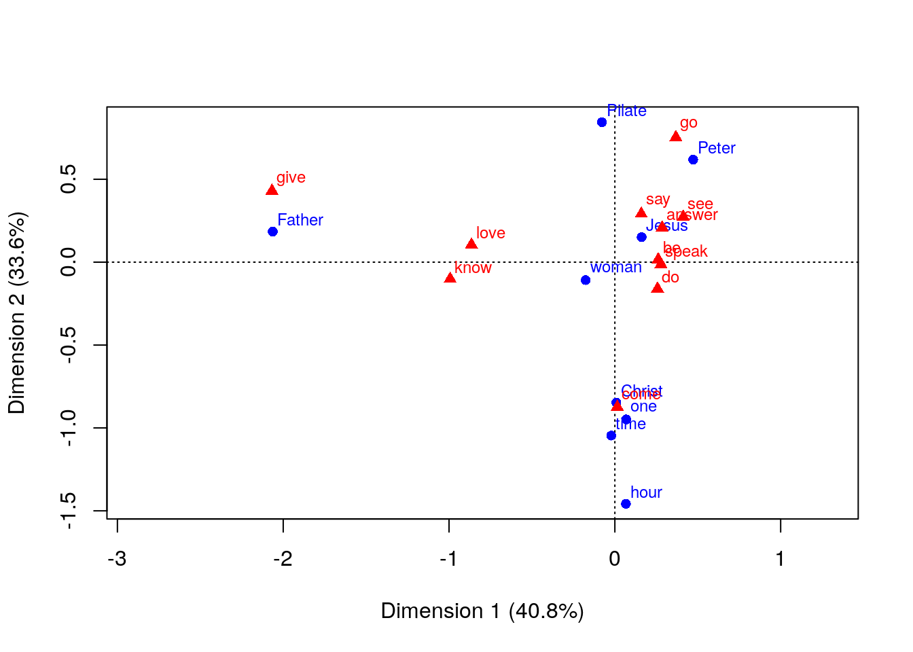

DepsearcheR - querying syntactically annotated data with R
Juho Härme
2018-12-01
The DepsearcheR package is a simple utility made for the purpose of using R for corpus analyses involving the utilization of dependency annotations represented in some version of the CoNLL format (cf. e.g here).
1 Example data
Assume that you have parsed a file like the one provided in the inst/extdata folder of this package (the Finnish wikipedia article for sparrow):
library(depsearcheR)
library(readr)
mytext <- readr::read_file(
system.file("extdata",
"varpunen_wikipedia.txt",
package="depsearcheR")
)
cat(substr(mytext,1,300))## Varpunen (Passer domesticus) on yleinen lintulaji suuressa osassa Eurooppaa ja Aasiaa. Carolus Linnaeus antoi varpuselle aluksi nimen Fringilla domestica.
## Varpunen on 14–17 cm pitkä ja painaa 30–33 g. Koiras on hieman kookkaampi. Varpusella on tukeva ruumis, suhteellisen suuri pää ja voimakas nokka.The text has been parsed with the Finnish dependency parser developed at the university of Turku and this output file is also included in inst/extdata. Note that the format here is the so called universal dependencies format. This is what the conll formatted file looks like:
1 Varpunen varpunen NOUN _ Case=Nom|Number=Sing 8 nsubj:cop _ _
2 ( ( PUNCT _ _ 4 punct _ _
3 Passer Passer PROPN _ Case=Nom|Number=Sing 4 compound:nn _ _
4 domesticus domesticus NOUN _ Case=Nom|Number=Sing 1 appos _ _
5 ) ) PUNCT _ _ 4 punct _ _
6 on olla VERB _ Mood=Ind|Number=Sing|Person=3|Tense=Pres|VerbForm=Fin|Voice=Act 8 cop _ _
7 yleinen yleinen ADJ _ Case=Nom|Degree=Pos|Number=Sing 8 amod _ _
8 lintulaji lintu#laji NOUN _ Case=Nom|Number=Sing 0 root _ _
9 suuressa suuri ADJ _ Case=Ine|Degree=Pos|Number=Sing 10 amod _ _
10 osassa osa NOUN _ Case=Ine|Number=Sing 8 nmod _ _
11 Eurooppaa Eurooppa PROPN _ Case=Par|Number=Sing 10 nmod _ _
12 ja ja CONJ _ _ 11 cc _ _
13 Aasiaa Aasia PROPN _ Case=Par|Number=Sing 11 conj _ _
14 . . PUNCT _ _ 8 punct _ _
1 Carolus Carolus PROPN _ Case=Nom|Number=Sing 2 name _ _
2 Linnaeus Linnaeus PROPN _ Case=Nom|Number=Sing 3 nsubj _ _
3 antoi antaa VERB _ Mood=Ind|Number=Sing|Person=3|Tense=Past|VerbForm=Fin|Voice=Act 0 root _ _
4 varpuselle varpunen NOUN _ Case=All|Number=Sing 3 nmod _ _
5 aluksi aluksi ADV _ _ 3 advmod _ _
6 nimen nimi NOUN _ Case=Gen|Number=Sing 7 nmod:poss _ _
7 Fringilla Fringilla NOUN _ Case=Ade|Number=Plur 3 nmod _ _
8 domestica domestica X _ Foreign=Foreign 3 dobj _ _
9 . . PUNCT _ _ 3 punct _ _Now, let’s imagine we have a data set consisting of all the sentences of the Finnish wikipedia article mentioned above. It could be acquired as follows:
library(dplyr)
library(readr)
sentences <- readr::read_file(
system.file("extdata",
"varpunen.conll",
package="depsearcheR")
) %>%
strsplit("\n\n") %>%
unlistThe data is also included in the package as a sample vector called varpunen_sentences, which we will use in the following examples.
Now, since there is some variation among the different conll formats and not all conll outputs have the same number of columns, you should set the columns used in each session as a global option via the options function. For instance, for the results of the Stanford parser’s 2015 version, we should do:
options("conll_cols" = c("tokenid","token","lemma","feat","none", "head", "dep"))Since in the following examples we’ll be using the Finnish dep parser, we’ll set it like this:
options("conll_cols" = c("tokenid","token","lemma","pos","pos2","feat","head","dep","null1","null2"))2 Usage on the sentence level
At the heart of the depsearcheR package is an extremely simple function called FilterConllRows. The idea of this function is to filter a conll formatted sentence according to some conditions given by the users. The output of the filter can then be used for more filtering.
As simple and trivial scenario, imagine that we want to retrieve all the nouns of a sentence. This could be achieved in the following way (using the example set of sentences from the previous section):
FilterConllRows(varpunen_sentences[1], "pos", "NOUN")## # A tibble: 4 x 10
## tokenid token lemma pos pos2 feat head dep null1 null2
## <int> <fct> <fct> <fct> <fct> <fct> <int> <fct> <fct> <fct>
## 1 1 Varpunen varpunen NOUN _ Case=… 8 nsub… _ _
## 2 4 domesticus domesticus NOUN _ Case=… 1 appos _ _
## 3 8 lintulaji lintu#laji NOUN _ Case=… 0 root _ _
## 4 10 osassa osa NOUN _ Case=… 8 nmod _ _The function can also be used with regular expressions:
FilterConllRows(varpunen_sentences[1], "feat", "Case=Ine", use_regex=T)## # A tibble: 2 x 10
## tokenid token lemma pos pos2 feat head dep null1 null2
## <int> <fct> <fct> <fct> <fct> <fct> <int> <fct> <fct> <fct>
## 1 9 suuressa suuri ADJ _ Case=Ine|Deg… 10 amod _ _
## 2 10 osassa osa NOUN _ Case=Ine|Num… 8 nmod _ _…conditions with multiple values
FilterConllRows(varpunen_sentences[1], "pos", c("NOUN","ADJ"))## # A tibble: 6 x 10
## tokenid token lemma pos pos2 feat head dep null1 null2
## <int> <fct> <fct> <fct> <fct> <fct> <int> <fct> <fct> <fct>
## 1 1 Varpunen varpunen NOUN _ Case=… 8 nsub… _ _
## 2 4 domesticus domesticus NOUN _ Case=… 1 appos _ _
## 3 7 yleinen yleinen ADJ _ Case=… 8 amod _ _
## 4 8 lintulaji lintu#laji NOUN _ Case=… 0 root _ _
## 5 9 suuressa suuri ADJ _ Case=… 10 amod _ _
## 6 10 osassa osa NOUN _ Case=… 8 nmod _ _or with negative conditions, for instance to get everything that’s not a noun or an adjective (or a punctuation mark):
FilterConllRows(varpunen_sentences[1], "pos", c("NOUN","ADJ","PROPN","PUNCT"), is_negative=T)## # A tibble: 2 x 10
## tokenid token lemma pos pos2 feat head dep null1 null2
## <int> <fct> <fct> <fct> <fct> <fct> <int> <fct> <fct> <fct>
## 1 6 on olla VERB _ Mood=Ind|Number… 8 cop _ _
## 2 12 ja ja CONJ _ _ 11 cc _ _You can add more complex conditions by piping the reslts in dplyr style. Note that since the philosophy behind this package relies quite heavily on the one behind dplyr (or the tidyverse framework in general) it might be a good idea to get a basic idea of what that is about (e.g. here). The very basic thing to note: the %>% operator used in the following examples is called the piping operator (from the magrittr package) and it’s a way to pass on a functions return value to another function.
So, to get, for instance, something that is not a noun but is in the inessive case, we might do:
FilterConllRows(varpunen_sentences[1], "pos", c("NOUN","PROPN"),is_negative=T) %>%
FilterConllRows("feat", "Case=Ine", use_regex=T) ## # A tibble: 1 x 10
## tokenid token lemma pos pos2 feat head dep null1 null2
## <int> <fct> <fct> <fct> <fct> <fct> <int> <fct> <fct> <fct>
## 1 9 suuressa suuri ADJ _ Case=Ine|Deg… 10 amod _ _And actually, with the piping style going on, we could start with the sentence:
varpunen_sentences[1] %>%
FilterConllRows("pos", c("NOUN","PROPN"),is_negative=T) %>%
FilterConllRows("feat", "Case=Ine", use_regex=T) ## # A tibble: 1 x 10
## tokenid token lemma pos pos2 feat head dep null1 null2
## <int> <fct> <fct> <fct> <fct> <fct> <int> <fct> <fct> <fct>
## 1 9 suuressa suuri ADJ _ Case=Ine|Deg… 10 amod _ _Stylistically, this looks a little better to me.
This kind of “filtering the filtered” is where the function actually gets useful for getting information about dependencies.
Now, imagine we want to get all the dependents of a finite verb in a sentence. For that, we can use the values of the columns head and tokenid.
#Get all the finite verbs in the sentence
finverbs <- FilterConllRows(varpunen_sentences[2], "feat", "VerbForm=Fin", T)
#Get their dependents
deps <- FilterConllRows(varpunen_sentences[2], "head", finverbs$tokenid)
deps## # A tibble: 6 x 10
## tokenid token lemma pos pos2 feat head dep null1 null2
## <int> <fct> <fct> <fct> <fct> <fct> <int> <fct> <fct> <fct>
## 1 2 Linnaeus Linnaeus PROPN _ Case=N… 3 nsubj _ _
## 2 4 varpuselle varpunen NOUN _ Case=A… 3 nmod _ _
## 3 5 aluksi aluksi ADV _ _ 3 advm… _ _
## 4 7 Fringilla Fringilla NOUN _ Case=A… 3 nmod _ _
## 5 8 domestica domestica X _ Foreig… 3 dobj _ _
## 6 9 . . PUNCT _ _ 3 punct _ _There is actually a shortcut function for getting the dependents of a word. It’s called GetDeps and it takes as it’s arguments
- a word (=a row of a tibble) or multiple words (a tibble) that are the heads we’re looking at
- an unfiltered sentence (as a tibble)
So, the previous example could be written as:
varpunen_sentences[2] %>%
FilterConllRows("feat", "VerbForm=Fin", T) %>% # returns one row, passed on to the GetDeps function
GetDeps(varpunen_sentences[2]) # note: the original sentence is the second argument## # A tibble: 6 x 10
## tokenid token lemma pos pos2 feat head dep null1 null2
## <int> <fct> <fct> <fct> <fct> <fct> <int> <fct> <fct> <fct>
## 1 2 Linnaeus Linnaeus PROPN _ Case=N… 3 nsubj _ _
## 2 4 varpuselle varpunen NOUN _ Case=A… 3 nmod _ _
## 3 5 aluksi aluksi ADV _ _ 3 advm… _ _
## 4 7 Fringilla Fringilla NOUN _ Case=A… 3 nmod _ _
## 5 8 domestica domestica X _ Foreig… 3 dobj _ _
## 6 9 . . PUNCT _ _ 3 punct _ _There is also the GetHeads function for doing this the other way around: if we want to, say, find all the heads of (common) nouns, we could do it as follows.
varpunen_sentences[2] %>%
FilterConllRows("pos", "NOUN") %>%
GetHeads(varpunen_sentences[2]) ## # A tibble: 2 x 10
## tokenid token lemma pos pos2 feat head dep null1 null2
## <int> <fct> <fct> <fct> <fct> <fct> <int> <fct> <fct> <fct>
## 1 3 antoi antaa VERB _ Mood=In… 0 root _ _
## 2 7 Fringilla Fringilla NOUN _ Case=Ad… 3 nmod _ _Note that we can use the output of GetDeps and GetHeads for further filtering, for instance to get only the kind of dependents for finite verbs that are not nouns (or punctuation marks):
varpunen_sentences[2] %>%
FilterConllRows("feat", "VerbForm=Fin", T) %>%
GetDeps(varpunen_sentences[2]) %>%
FilterConllRows("pos", c("PROPN", "NOUN", "PUNCT"), is_negative=T)## # A tibble: 2 x 10
## tokenid token lemma pos pos2 feat head dep null1 null2
## <int> <fct> <fct> <fct> <fct> <fct> <int> <fct> <fct> <fct>
## 1 5 aluksi aluksi ADV _ _ 3 advm… _ _
## 2 8 domestica domestica X _ Foreign… 3 dobj _ _3 Usage on the dataset level
All the previous examples demonstrate the usage of the simple functions in this package on the sentence level. What the whole package is actually for, is, however, querying datastructures containing multiple sentences and filtering only the ones that are relevant for the user.
It should be emphasized at this point that this package is definitely not meant for effective data mining on a large scale. The functions used are simple, perhaps even trivial, and performance is the cost. But if you know what you’re searching for and are not dealing with a terribly large dataset (or have a lot of time) this can be a useful approach.
3.1 Querying a raw text
The first, although propably not the most common, use case considered here is where you have a conll formatted text (such as the one from the first section of this vignette) and you want to make queries to find sentences with certain characteristics. To do that, we want to have the data formatted as a vector of sentences.
Since the data in conll format separates sentences with an empty row, a vector of sentences can be obtained simply by splitting the file by two consequtive newlines as was done at the beginning of this vignette. There is also a convenience function for this, which takes a filename as a parameter and produces the vector:
sentences <- GetSentencesFromFile("inst/extdata/varpunen.conll")Now, let’s say we want to get all the sentences
- which include a finite verb
- in which the finite verb has a subject dependent
- in which the subject is a proper name
The trick here is to develop custom functions that will take care of the filtering and then apply those functions to the vector containing the sentences. Here’s an example function that can be used for searching for only the kind of results described above (has a finite verb, the verb has a subject dependent, the subject is a proper name)
MyFilterFunction <- function(sentence) {
sentence %>%
FilterConllRows("feat","VerbForm=Fin", T) %>%
GetDeps(sentence) %>%
FilterConllRows("dep","nsubj") %>%
FilterConllRows("pos","PROPN") %>%
return
} There is one requirement to keep in mind when creating these filters: every filter must take a single sentence as its only argument and return the filtered matches so that they can be further processed. Before the return statement you can have as complex or as simple a set of code as you wish. The filters should be used with the ApplyConllFilter function of this library in the following manner:
options("conll_cols" = c("tokenid","token","lemma","pos","pos2","feat","head","dep","null1","null2"))
matched_sentences <- ApplyConllFilter(varpunen_sentences, MyFilterFunction)By default ApplyConllFilter just returns the sentences of the input vector that matched the specified filter. In our case, there was one sentence that matched the query. To view the sentence as a tibble, we can use the function ConllAsTibble:
ConllAsTibble(matched_sentences)## # A tibble: 9 x 10
## tokenid token lemma pos pos2 feat head dep null1 null2
## <int> <fct> <fct> <fct> <fct> <fct> <int> <fct> <fct> <fct>
## 1 1 Carolus Carolus PROPN _ Case=N… 2 name _ _
## 2 2 Linnaeus Linnaeus PROPN _ Case=N… 3 nsubj _ _
## 3 3 antoi antaa VERB _ Mood=I… 0 root _ _
## 4 4 varpuselle varpunen NOUN _ Case=A… 3 nmod _ _
## 5 5 aluksi aluksi ADV _ _ 3 advm… _ _
## 6 6 nimen nimi NOUN _ Case=G… 7 nmod… _ _
## 7 7 Fringilla Fringilla NOUN _ Case=A… 3 nmod _ _
## 8 8 domestica domestica X _ Foreig… 3 dobj _ _
## 9 9 . . PUNCT _ _ 3 punct _ _Or, if we would like a more human-readable representation of the actual sentence, there is a function called ConllAsSentence:
ConllAsSentence(matched_sentences)## [1] "Carolus Linnaeus antoi varpuselle aluksi nimen Fringilla domestica."Keep in mind, however, that these two functions take single sentences as arguments, not vectors of sentences.
If we want different kind of output from ApplyConllFilter, we can specify this via the return_type parameter. This parameter is a string defaulting to “raw” (the kind of output we got above, i.e. just a filtered vector of conll-formatted sentences). Other possible values are:
matches: returns all the words (rows) that match as a single tibble.both: returns both the matching words and the conll output as an additional column (sent)both_pretty: same as above but instead of the raw conll string converts the sentence to a human readable format
The matches version of the output is useful if we want to further analyze the results of our queries, not just count how many matches we got. This will be more closely illustrated below.
The kind of queries presented above work okay with the kind of toy files used here as examples. However, if we have a larger text, this really not an effective way of mining it. However, if you don’t mind the query running for a while, you can, of course, give this approach a go. For that kind cases, ApplyConllFilter uses a progress bar with an estimation of the remaining time (the proggress bar itself is part of the dplyr package).
As a larger example, consider querying the entire (English translation of the) gospel of John1 with a similar filter. This set of sentences is included with the package as a vector called gospel_of_john_sentences. Note that since we are now switching to a different kind of parser output, we must define the expected columns again using the options function.
AnotherFilter <- function(sentence) {
sentence %>%
FilterConllRows("feat", "^V", use_regex=T) %>%
FilterConllRows("feat", "VV", is_negative=T) %>%
GetDeps(sentence) %>%
FilterConllRows("dep","nsubj") %>%
FilterConllRows("feat",c("NN","NNP")) %>%
return
}
options("conll_cols" = c("tokenid","token","lemma","feat","none", "head", "dep"))
start.time <- Sys.time()
matched_sentences <- ApplyConllFilter(gospel_of_john_sentences, AnotherFilter)
show(Sys.time() - start.time)## Time difference of 3.992389 secsshow(length(matched_sentences))## [1] 501As you can see, on my thinkpad x220 that took around 3 seconds – still not terribly bad. To get the perspective: this version of the gospel of John has 1,218 sentences. Of these, our search criteria were met by 501.
As a somewhat more serious work load, let’s try to parse the whole New testament. That means 9,329 sentences (not included in this package).
The result (on the same icore5 2.5ghz processor): Time difference of 16.20708 secs
So, let’s say that 17 seconds for around 10,000 sentences. If it means that 100,000 sentences will be analyzed in 170 seconds = a little less than 3 minutes, well – you get the perspective. Not the most effective way, but suitable for many cases, and if you’ve got time to wait, even for some more serious text mining assignments.
3.1.1 Getting parameters from the results
In the previous examples we retrieved sentences by different filters and so far we have relied on the raw output of ApplyConllFilter. Let’s move on to imagining a scenario in which we want to get specific parameters out of the filtered results, that is, to specifying return_type = 'matches'..
Consider the previous example with the sentences from the Gospel of John. Our little filter, repeated below, obtained all the cases where a finite verb had a subject dependent which was a noun:
AnotherFilter <- function(sentence) {
sentence %>%
FilterConllRows("feat", "^V", use_regex=T) %>%
GetDeps(sentence) %>%
FilterConllRows("dep","nsubj") %>%
FilterConllRows("feat",c("NN","NNP")) %>%
return
}
matched_words <- ApplyConllFilter(gospel_of_john_sentences, AnotherFilter, "matches")Now we have a tibble called matched_words which contains all the words (all the rows from the conll representations of sentences). With this tibble we can do any statistical operations we would normally do with or data sets. As an especially simple example, think about taking all the subject dependents of finite verbs in the gospel of John and looking at which lemmas are most frequent as the subject:
matched_words %>% count(lemma) %>% arrange(desc(n))## # A tibble: 129 x 2
## lemma n
## <fct> <int>
## 1 Jesus 187
## 2 Father 29
## 3 man 23
## 4 Peter 19
## 5 one 18
## 6 world 15
## 7 Pilate 14
## 8 Lord 11
## 9 multitude 11
## 10 John 10
## # ... with 119 more rowsNo surprise, the most frequent subject is the proper name “Jesus”. But what is it that he keeps on doing? Let’s modify the filter a little:
YetAnotherFilter <- function(sentence) {
sentence %>%
FilterConllRows("feat", "^V", use_regex=T) %>%
GetDeps(sentence) %>%
FilterConllRows("dep","nsubj") %>%
FilterConllRows("lemma", "Jesus") %>%
GetHeads(sentence) %>%
return
}
verbs_with_Jesus <- ApplyConllFilter(gospel_of_john_sentences,YetAnotherFilter,"both_pretty")The filter became a little circular (we’re first taking all the dependents of verbs, then filtering those and then getting their heads again…), but it does the job:
verbs_with_Jesus %>% count(lemma) %>% arrange(desc(n))## # A tibble: 35 x 2
## lemma n
## <fct> <int>
## 1 say 65
## 2 answer 36
## 3 come 16
## 4 do 9
## 5 go 7
## 6 speak 6
## 7 love 6
## 8 see 5
## 9 walk 4
## 10 make 3
## # ... with 25 more rowsNow, what if we would like to combine this information to get ngrams of sorts?
a <- function(sentence) {
sentence %>%
FilterConllRows("feat", "^V", use_regex=T) %>%
GetDeps(sentence) %>%
FilterConllRows("dep","nsubj") %>%
FilterConllRows("feat",c("NN","NNP")) %>%
return
}
b <- function(sentence) {
sentence %>%
FilterConllRows("feat", "^V", use_regex=T) %>%
GetDeps(sentence) %>%
FilterConllRows("dep","nsubj") %>%
FilterConllRows("feat",c("NN","NNP")) %>%
GetHeads(sentence) %>%
return
}
subj <- ApplyConllFilter(gospel_of_john_sentences,a,"both_pretty")
verb <- ApplyConllFilter(gospel_of_john_sentences,b,"both_pretty")
tab <- subj %>%
select(lemma, sent) %>%
left_join(verb %>% select(lemma, sent), by="sent") %>%
count(lemma.x, lemma.y) %>%
arrange(lemma.x, desc(n)) %>%
filter(n>4)
tab %>% print(n=99)## # A tibble: 18 x 3
## lemma.x lemma.y n
## <fct> <fct> <int>
## 1 Jesus say 65
## 2 Jesus answer 36
## 3 Jesus come 24
## 4 Jesus do 11
## 5 Jesus go 8
## 6 Jesus love 7
## 7 Jesus be 6
## 8 Jesus speak 6
## 9 Jesus see 6
## 10 Jesus know 5
## 11 Father give 6
## 12 one come 7
## 13 hour come 6
## 14 time come 8
## 15 Christ come 5
## 16 Peter say 5
## 17 woman say 5
## 18 Pilate say 6And we could, of course keep on going and draw some graphs, build statistical models and so on… A correspondence analysis, maybe?
library(ca)
subj %>%
select(lemma, sent) %>%
left_join(verb %>% select(lemma, sent), by="sent") %>%
filter(lemma.x %in% tab$lemma.x, lemma.y %in% tab$lemma.y) %>%
mutate(lemma.x = as.character(lemma.x), lemma.y=as.character(lemma.y)) %>%
ca(~lemma.x + lemma.y, data=.) %>%
plot
3.2 Filtering concordances
Although it is certainly possible to use this library for querying entire texts outputted in the conll format, the use case for which the library was created is when you have a data frame containing a list of concordances with more information than just the actual conll-annotated sentence.
The basic idea is to have the data in a data frame / tibble where one row corresponds to one sentence (or one relevant annotated context of any length) and there is a column containing the conll representation of the sentence. In addition, you probably have some variables, at least metadata an the like. One sample use case is, for instance, if you’ve queried for Twitter data and would like to have each tweet parsed and then use the conll output of the tweet together with the massive amounts of metadata variables provided by the Twitter API for each tweet.
Here’s a toy example of such a task.
Let’s imagine we want to analyze the usage of the word “referee” in recent Uefa champions’ league games (recent, because the Twitter api only let’s you search for tweets not older than one week). In order to run the following you need to have requested developer access from Twitter, but never mind, the data is also available as a small data set accompanying this package.
#library(rtweet)
#ref <- search_tweets("(#UCL OR #ChampionsLeague OR #UEFAChampionsLeague) referee", n = 5000)I used the method described in the context of the webcorpcrawler python utility to add syntactic annotations using Stanford Core-NLP. This gave me the following data set, available, as mentioned, as part of this package. (I’ve stripped away most of the props offered by the Twitter API since there is A LOT of them)
ucl_ref## # A tibble: 262 x 6
## text followers retweets favorites location parsed_text
## <chr> <int> <int> <int> <chr> <chr>
## 1 "Here's… 8251 1 1 Berlin,… "1\tHere\there\tRB\t_\t…
## 2 "\"We l… 146 1 0 Kraków,… "1\t``\t``\t``\t_\t3\tp…
## 3 "#Wedne… 58 7 0 lagos c… "1\t#WednesdayWisdom\t#…
## 4 "This r… 20546 28 0 South A… "1\tThis\tthis\tDT\t_\t…
## 5 "They m… 4310 0 0 Lagos N… "1\tThey\tthey\tPRP\t_\…
## 6 "This r… 11689 28 0 ☆S I Y … "1\tThis\tthis\tDT\t_\t…
## 7 "Jurgen… 4566 1 3 New Del… "1\tJurgen\tJurgen\tNNP…
## 8 "#Jurge… 506 0 0 Armenia "1\t#JurgenKlopp\t#jurg…
## 9 Liverpo… 34247 1 0 Paris, … "1\tLiverpool\tLiverpoo…
## 10 Liverpo… 34247 1 0 Paris, … "1\tLiverpool\tLiverpoo…
## # ... with 252 more rowsIn the ucl_ref dataset, the conll annotated raw text is stored in the parsed_text column. Let’s do something analogous to the previous example and look at the verbs the word ‘referee’ is an object of. First, let’s build our filter:
ref_filt <- function(sentence){
sentence %>%
FilterConllRows("lemma", "referee") %>%
FilterConllRows("dep", "dobj") %>%
GetHeads(sentence) %>%
FilterConllRows("feat", "^V", T) %>%
return
}We could test the filter with using just the parsed_text column as a vector:
matches <- ApplyConllFilter(ucl_ref$parsed_text, ref_filt)
show(length(matches))## [1] 12Right, 12 matches, so the filter is working. But how to filter the actual data frame, not just the column with the annotated sentences? For this use case, the package includes a version of the ApplyConllFilter called ApplyConllFilter_df. Its first argument is the tibble (or data frame) to be filtered, the second argument is the custom filter function we’ve created and the third argument is the name of the column containing the conll annototated sentence. To filter our ucl_ref tibble so that we’re left with only the cases where the word referee is used as a direct object of a verb we would simply run:
ref_as_obj <- ucl_ref %>%
ApplyConllFilter_df(ref_filt, "parsed_text") …and we get the twelve rows that match the condition. We could now check the metadata of the rows to look at, for instance, where these kinds of tweets are coming from:
ref_as_obj %>% count(location)## # A tibble: 12 x 2
## location n
## <chr> <int>
## 1 "" 1
## 2 🏴 1
## 3 City Of Compton 1
## 4 England, United Kingdom 1
## 5 Heathrow 1
## 6 In My Liverpool Home 1
## 7 India 1
## 8 İstanbul, Türkiye 1
## 9 London | England 1
## 10 Northern Ireland 1
## 11 Royal Tunbridge Wells, England 1
## 12 Scotland 1We can also spesify, if we want our data set filter to return an additional column (called filtered_col) which contains some property of the word (TODO: words) matched by the filter. For instance, if we would like to get the lemmas of the head verbs in the cases where referee is used as a direct object, we could do:
filtered <- ucl_ref %>%
ApplyConllFilter_df(ref_filt, "parsed_text", return_col="lemma") Now we could check, for instance, if a certain verb + referee as the object combination attracts more retweets than others by using the metadata available in the data frame:
filtered %>%
count(filtered_col, retweets) %>%
arrange(desc(n))## # A tibble: 10 x 3
## filtered_col retweets n
## <fct> <int> <int>
## 1 get 0 2
## 2 surround 0 2
## 3 criticise 0 1
## 4 play 0 1
## 5 berate 0 1
## 6 pay 0 1
## 7 include 0 1
## 8 hope 0 1
## 9 go 0 1
## 10 announce 0 1Well, oviously the data set here is too limited to get any kind of reasonable results, but you get the idea.
As a final remark about the ApplyConllFilter_df function, it should be added that there is also the possibility to return the whole data frame with the filtered_col column so that for the rows that don’t match the syntactic filter the function just returns NA:
filtered2 <- ucl_ref %>%
ApplyConllFilter_df(ref_filt, "parsed_text", return_col="lemma", return_all = T)
filtered2 %>% count(filtered_col) %>% arrange(desc(n))## # A tibble: 11 x 2
## filtered_col n
## <chr> <int>
## 1 <NA> 250
## 2 get 2
## 3 surround 2
## 4 announce 1
## 5 berate 1
## 6 criticise 1
## 7 go 1
## 8 hope 1
## 9 include 1
## 10 pay 1
## 11 play 1Included, also, as a sample file from the public domain World English version and parsed with the Stanford coreNLP parser.↩